|
|
HELP FIND THE FOLLOWING UNKNOWN LOCATIONS
PAGE 2
THE AVENGERS:Epic (James Hill: February 1967)
Mrs. Peel is tricked into using a taxi driven by a disguised Stewart
Kirby's.
Mrs Peel soon realises that they are going the wrong way, but when she
protests
she is rendered unconscious by gas fed into her sealed compartment.
 This first shot looks like the swamp
on London Road near the entrance to High Cannons. The taxi is seen on
London
Road near the entrance to High Cannons , Shenley Road and heading up
Theobald
Street, so obvious options are going to be within the area defined by
Theobald
Street, Radlett Lane, Silver Hill, London Road, Rowley Lane, Cowley
Hill/Gateshead Road and Shenley Road.
This first shot looks like the swamp
on London Road near the entrance to High Cannons. The taxi is seen on
London
Road near the entrance to High Cannons , Shenley Road and heading up
Theobald
Street, so obvious options are going to be within the area defined by
Theobald
Street, Radlett Lane, Silver Hill, London Road, Rowley Lane, Cowley
Hill/Gateshead Road and Shenley Road.
(Identified by Stephen Winterbottom, June 2015)

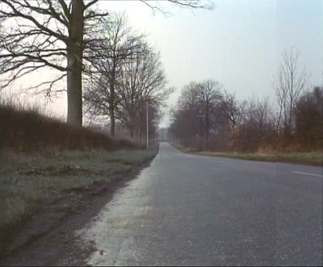
THE AVENGERS: Have Guns - Will Haggle
(Ray
Austin: October 1967)
As Tara
heads home in her Lotus she passes Conrad's Jaguar. Conrad is waiting inside
and drives off after the Lotus.
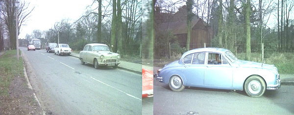
THE AVENGERS: The Nutshell (Raymond Menmuir, May 1963)
Anderson and Venner drive to the airfield where Steed is meeting with Jason.
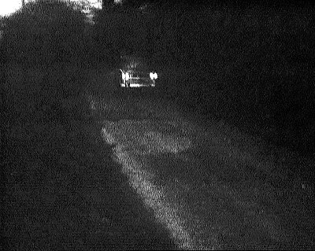
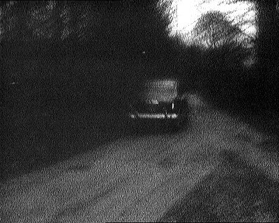
THE AVENGERS: Build a Better Mousetrap
(Peter Hammond, August
1963)
Unknown 1: Mrs.
Gale (Honor
Blackman)
joins a group of motorcyclists on their cross-country run to Vernon.
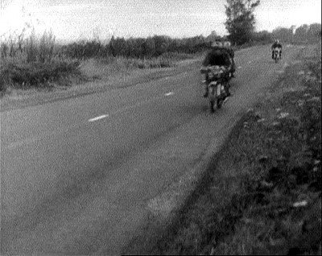
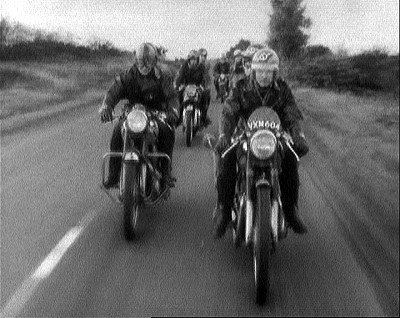
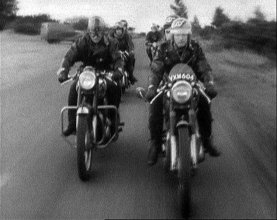
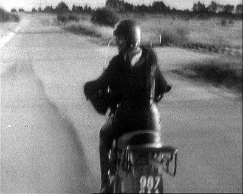
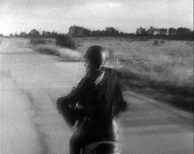
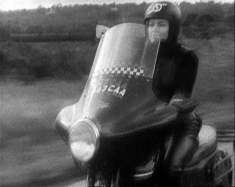
 Is that a
train in the background of the last shot?
Is that a
train in the background of the last shot?
Unknown 2: During the point-to-point suggested by Steed, Mrs. Gale’s (Honor Blackman) motorbike breaks down 7 miles from Vernon.
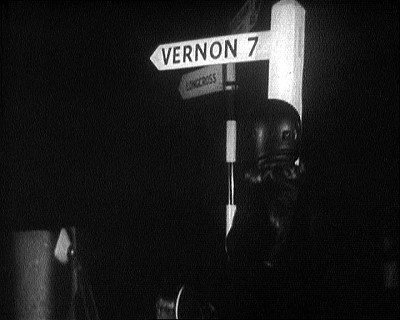
 Longcross,
Surrey is
near the former M.O.D. vehicle testing centre ‘Longross Proving Ground” and
areas of
heath land such as Chobham
Common and Aldbury
Bottom.
Longcross,
Surrey is
near the former M.O.D. vehicle testing centre ‘Longross Proving Ground” and
areas of
heath land such as Chobham
Common and Aldbury
Bottom.
THE AVENGERS: A Funny Thing Happened on the Way to the Station
(John Krish:
March 1967)
I7: Napsbury Station (demolished): Crewe
takes Mrs Peel and the Secret Service agent to his signal box (Napsbury Signal Box).
(Identified by Stephen Cowin, May 2007 and cofirmed by Geoff Dodd, October 2024)


 Stephen Cowin, May 2007 –
“I’m pretty sure this is of the old Napsbury signal box on the Midland”
Stephen Cowin, May 2007 –
“I’m pretty sure this is of the old Napsbury signal box on the Midland”
Unknown 2: Mrs Peel is told to open the door of the carriage and jump.
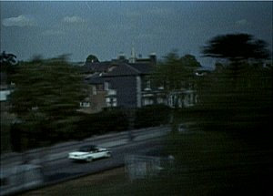
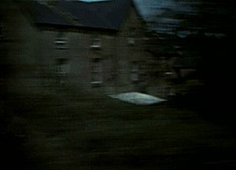
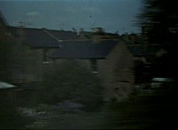
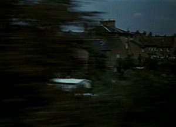
THE AVENGERS: The Rotters
(Robert Fuest:
September 1968)
Tara,
in her Cobra, drops Steed off at the home of Victor Forsyth.
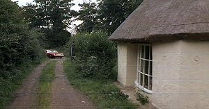
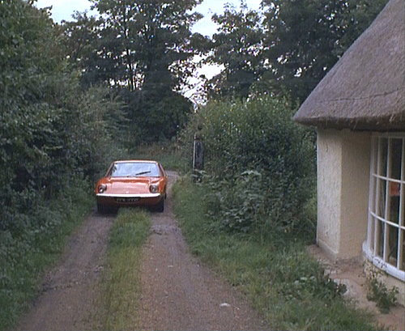
THE AVENGERS:
The Interrogators (Charles
Crichton: October 1968)
Unknown 1: The
first paid informant, Wilson, is killed with his own bow and arrow
whilst
practicing archery.
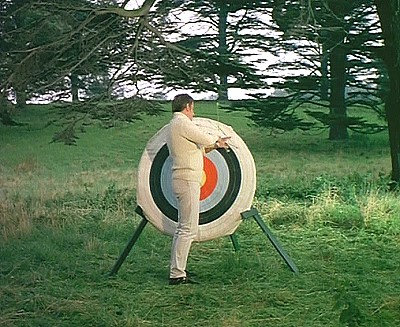
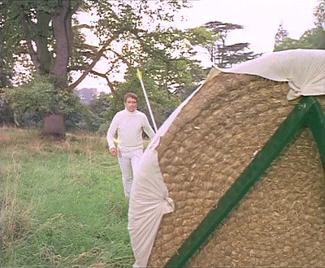
 There are
lots of cedar trees at Brocket Hall, see below.
There are
lots of cedar trees at Brocket Hall, see below.
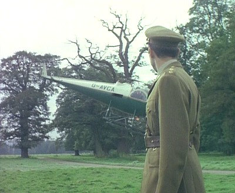
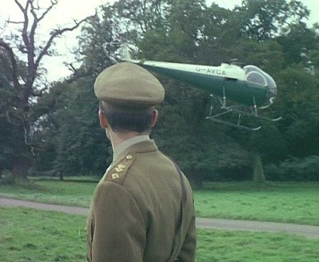
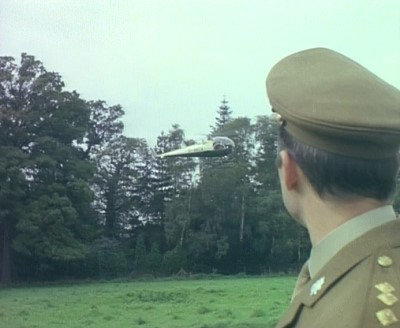
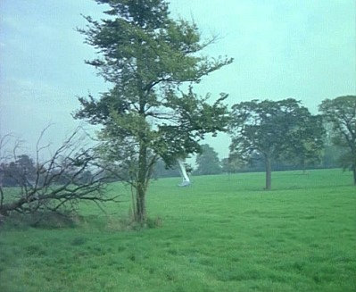
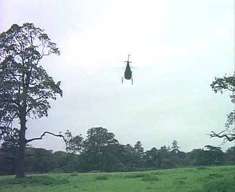
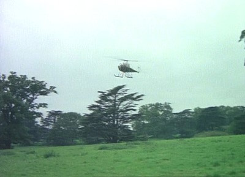
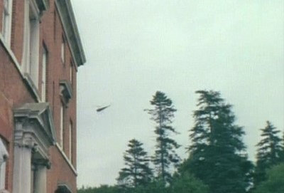
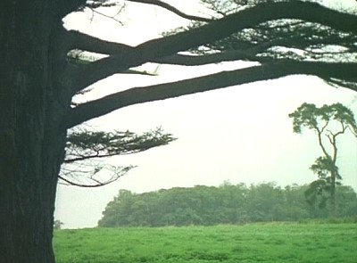
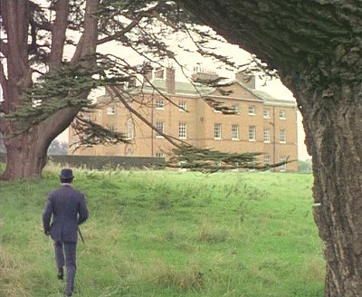
 This is included to give an indication of the
parkland
around Brocket Hall. Lots of cedar trees.
This is included to give an indication of the
parkland
around Brocket Hall. Lots of cedar trees.
Think you know a spot? Need a bigger image? Email me.
< Previous | Index | Avengerland | Next >
Copyright © 2003 Anthony R. McKay